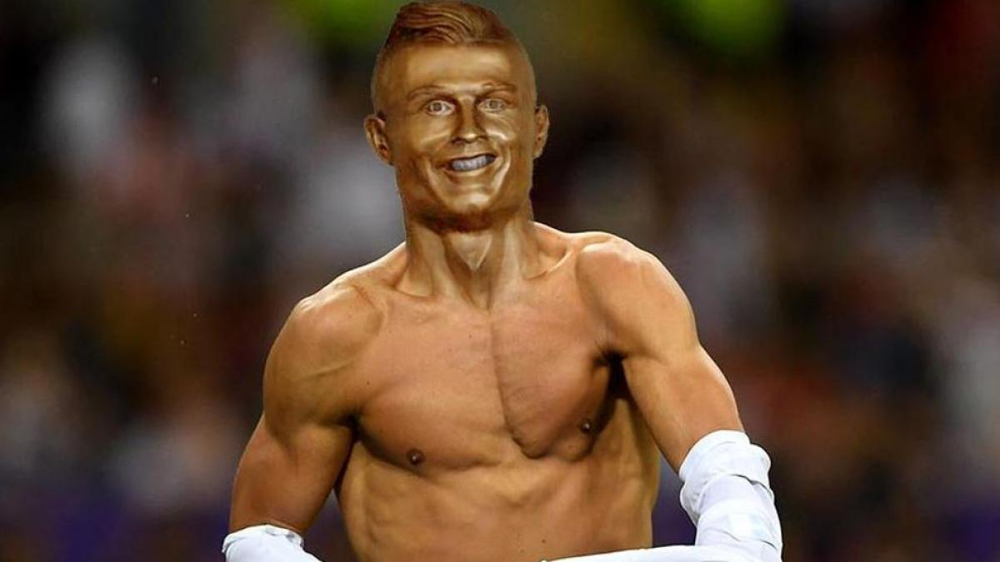

CRISITANO RONALDO

Zusammenfassung
Cristiano Ronaldo ist ein berühmter portugiesischer Fußballspieler, der bei Top-Vereinen wie Manchester United, Real Madrid und Juventus gespielt hat. Er ist für seine Torgefährlichkeit und beeindruckende Karriere bekannt und wurde mehrfach als bester Spieler der Welt ausgezeichnet.
Ausbildung
Cristiano Ronaldo hatte keine formale akademische Ausbildung, da er sich früh auf seine Fußballkarriere konzentrierte.
Berufserfahrungen
Fussballer
- asfasdfasdf
- asfasdfasdf
- asfasdfasdf
- asfasdfasdf
Fähigkeiten
- Passing: ⭐⭐⭐⭐⭐
- Dribbling ⭐⭐⭐⭐⭐
- Shooting⭐⭐⭐⭐⭐
- Physicality⭐⭐⭐⭐⭐
- Defending ⭐⭐⭐⭐⭐
- Pace⭐⭐⭐⭐⭐
Alle Titel
1x Europameister
- 2016, Portugal
3x Weltfussballer
- 2017, Real Madrid
- 2016, Real Madrid
- 2008, Manchester United
5x Gewinner Ballon d'Or
- 2017
- 2016
- 2014
- 2013
- 2008
5x Champions-League-Sieger
- 17/18, Real Madrid
- 16/17, Real Madrid
- 15/16, Real Madrid
- 13/14, Real Madrid
- 07/08, Manchester United
5x FIFA-Klub-Weltmeister
- 2017, Real Madrid
- 2016 Real Madrid
- 2015, Real Madrid
- 2014, Real Madrid
- 2008, Manchester United
5x, WM-Teilnehmer
- 2022, Portugal
- 2018, Portugal
- 2014, Portugal
- 2010, Portugal
- 2006, Portugal
4x Gewinner des Goldenen Schuhs
- 14/15, Real Madrid - 48 Tore
- 13/14, Real Madrid - 31 Tore
- 10/11, Real Madrid - 41 Tore
- 07/08, Manchester United - 31 Tore